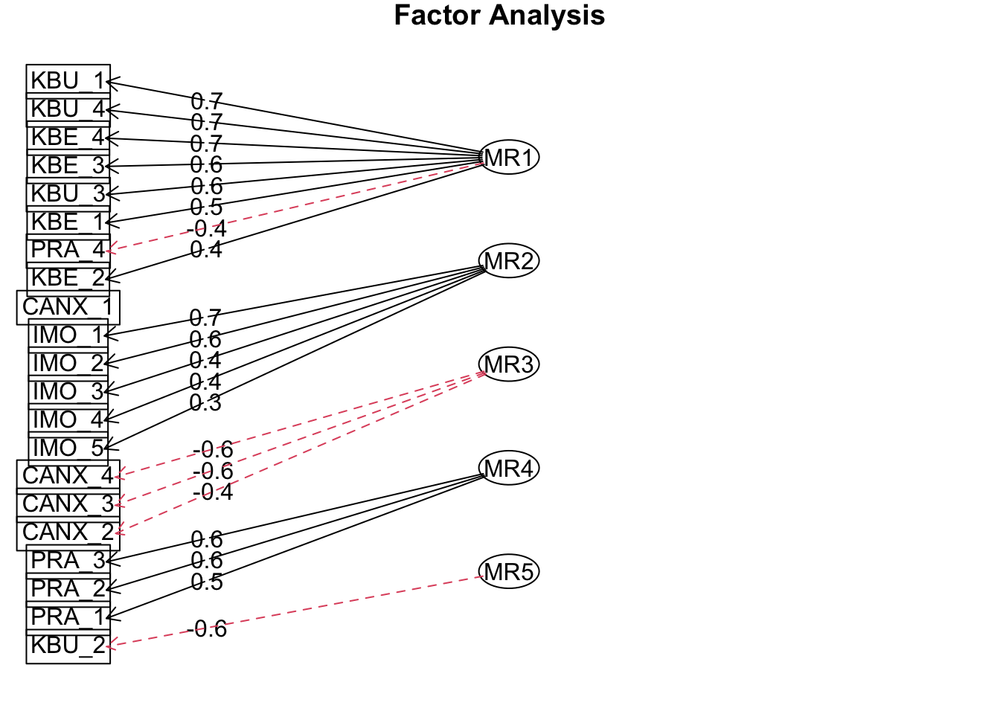

| χ² | RMSEA | cfi | srmr | ||||
|---|---|---|---|---|---|---|---|
| Wert | df | p | Wert | CIlow | CIhigh | ||
| 1,467.54 | 243.00 | 0.00 | 0.10 | 0.09 | 0.10 | 0.95 | 0.09 |
Statistische Analyse
Strukturgleichungsmodell
Basierend auf Camil (Makransky and Petersen 2021) und der Annahme, dass das Alter und die Ängstlichkeit vor Computern einen Einfluss auf das Lernen hat, wurde das folgenden Modell aufgestellt.

Überprüfung des Messmodells
Das Messmodell beinhaltet die fünf Skalen:
CANX (Computer Anxiety) - Ängstlichkeit vor Computern
PRA (Presence) - Präsenz im virtuellen Raum
IMO (Intrinsic motivation) - Intrinsische Motivation
KBE (Extraneous Cognitive load Interaction) - Kognitive Belastung, Interaktion
KBU (Extranous Cognitive load Environment) - Kognitive Belastung, Umgebung
Die Analysen wurden mit dem lavaan Package durchgeführt (Rosseel 2012).
Die Gütekriterien des Messmodels sind in der Table 1 aufgeführt und weisen auf eine akzeptable Passung des Models hin (CFI=0.89 , GFI=0.91, RMSEA=0.06, SRMR=0.06). Der \(\chi^2\)-Test (\(\chi^2\)(179)=583.55, p <0) fällt signifikant aus, was bei grossen Stichproben allerdings nicht ungewöhnlich ist, da diese direkt in die Teststatitsik miteinfliesst Eid, Gollwitzer, and Schmitt (2017).
| χ² | RMSEA | CFI | GFI | AGFI | SRMR | ||
|---|---|---|---|---|---|---|---|
| Wert | df | p | |||||
| 583.553 | 179 | 0 | 0.064 | 0.892 | 0.907 | 0.88 | 0.061 |
Table 1:
Gütekriterien des Messmodels
Figure 1 zeigt die latenten Variablen des Messmodells mit den entsprechenden standardisierten Faktorladungen. Alle Ladungen erreichten ein signifikantes Resultat (p<.001).

Betrachtet man die standardisierten Kovarianzen zwischen den latenten Faktoren des Modells (Figure 2) fällt besonders die zwischen den beiden Skalen KBE und KBU auf. Die Kovarianz beträgt 0.264 (SE=.036, z = 7,421, p < .001). Die standardisierte Kovarianz war mit 0,940 bemerkenswert hoch und deutet auf eine starke lineare Beziehung zwischen diesen beiden Konstrukten hin. Alle Kovarianzen sind signifikant (p<.01) ausser CANX~~PRA (p<.085) und CANX~~IMO (p<.795).

Modifikationsindices
In den Modifikationsindices fällt besonders die hohe Kovarianz zwischen Items der Skala Intrinsische Motivation auf, was ein Hinweis auf Redundanz der Items sein könnte oder dass sie ein anderes Konstrukt messen.
Besonders scheint das Items IMO_1 zu sein, da es als ein äusserst starker Indikator für die beiden Skalen KBE und KBU angesehen werden muss. Da diese Skalen völlig unterschiedliche Konstrukte messen, sticht diese Beziehung in besonderer Weise hervor.
| lhs | op | rhs | mi | epc | sepc.lv | sepc.all | sepc.nox |
|---|---|---|---|---|---|---|---|
| IMO_3 | ~~ | IMO_4 | 94.95 | 0.27 | 0.27 | 0.48 | 0.48 |
| KBE_2 | ~~ | KBU_2 | 86.40 | 0.44 | 0.44 | 0.42 | 0.42 |
| IMO_1 | ~~ | IMO_2 | 46.23 | 0.32 | 0.32 | 0.84 | 0.84 |
| KBU | =~ | IMO_1 | 34.87 | 0.42 | 0.23 | 0.21 | 0.21 |
| KBE | =~ | IMO_1 | 32.14 | 0.46 | 0.23 | 0.21 | 0.21 |
Table 2:
Modifikationsindices, fünf höchste Werte
Items der Skala Intrinsische Motivation
Die Items der Skala lauten wie folgt:
Ich arbeite gerne mit dem Thema der Kuhhaltung. (IMO_1)
Es macht Spass Aktivitäten rund um das Thema Kuhhaltung durchzuführen. (IMO_2)
Das Thema der Kuhhaltung ist langweilig. (IMO_3)
Das Thema der Kuhhaltung interessiert mich überhaupt nicht. (IMO_4)
Ich würde das Thema der Kuhhaltung als sehr interessant bezeichnen. (IMO_5)
Da diese Items aus dem Englischen übersetzt und an unsere Situation adaptiert wurden, ist es sehr gut möglich, dass einzelne Items nicht ideal zum Konstrukt der intrinsischen Motivation passen. Item IMO_1 hat in dieser Hinsicht auch einen semantischen Fehler, da es nicht wirklich möglich ist mit einem Thema zu arbeiten.
Strukturmodell - Nicht betrachten ;-)
CFA
lavaan 0.6.16 ended normally after 64 iterations
Estimator ML
Optimization method NLMINB
Number of model parameters 52
Number of observations 554
Model Test User Model:
Test statistic 583.553
Degrees of freedom 179
P-value (Chi-square) 0.000
Model Test Baseline Model:
Test statistic 3957.559
Degrees of freedom 210
P-value 0.000
User Model versus Baseline Model:
Comparative Fit Index (CFI) 0.892
Tucker-Lewis Index (TLI) 0.873
Loglikelihood and Information Criteria:
Loglikelihood user model (H0) -15629.004
Loglikelihood unrestricted model (H1) NA
Akaike (AIC) 31362.008
Bayesian (BIC) 31586.500
Sample-size adjusted Bayesian (SABIC) 31421.429
Root Mean Square Error of Approximation:
RMSEA 0.064
90 Percent confidence interval - lower 0.058
90 Percent confidence interval - upper 0.070
P-value H_0: RMSEA <= 0.050 0.000
P-value H_0: RMSEA >= 0.080 0.000
Standardized Root Mean Square Residual:
SRMR 0.061
Parameter Estimates:
Standard errors Standard
Information Expected
Information saturated (h1) model Structured
Latent Variables:
Estimate Std.Err z-value P(>|z|) Std.lv Std.all
CANX =~
CANX_1 1.000 0.382 0.209
CANX_2 2.940 0.645 4.557 0.000 1.122 0.644
CANX_3 3.526 0.760 4.642 0.000 1.345 0.815
CANX_4 3.488 0.751 4.645 0.000 1.331 0.900
PRA =~
PRA_1 1.000 0.566 0.614
PRA_2 1.193 0.113 10.550 0.000 0.675 0.610
PRA_3 1.279 0.112 11.465 0.000 0.723 0.713
PRA_4 1.261 0.113 11.163 0.000 0.713 0.671
IMO =~
IMO_1 1.000 0.910 0.814
IMO_2 0.822 0.048 17.104 0.000 0.748 0.790
IMO_3 0.586 0.043 13.598 0.000 0.533 0.610
IMO_4 0.651 0.050 13.008 0.000 0.592 0.584
IMO_5 0.551 0.057 9.623 0.000 0.501 0.438
KBE =~
KBE_1 1.000 0.501 0.573
KBE_2 1.072 0.130 8.255 0.000 0.537 0.421
KBE_3 1.248 0.107 11.709 0.000 0.625 0.678
KBE_4 1.092 0.090 12.184 0.000 0.547 0.725
KBU =~
KBU_1 1.000 0.558 0.736
KBU_2 1.057 0.090 11.735 0.000 0.589 0.540
KBU_3 1.084 0.074 14.606 0.000 0.605 0.674
KBU_4 1.105 0.068 16.296 0.000 0.616 0.758
Covariances:
Estimate Std.Err z-value P(>|z|) Std.lv Std.all
CANX ~~
PRA -0.029 0.013 -2.207 0.027 -0.133 -0.133
IMO 0.004 0.017 0.252 0.801 0.013 0.013
KBE 0.051 0.015 3.326 0.001 0.267 0.267
KBU 0.064 0.018 3.603 0.000 0.301 0.301
PRA ~~
IMO 0.134 0.030 4.510 0.000 0.259 0.259
KBE -0.117 0.020 -5.918 0.000 -0.413 -0.413
KBU -0.113 0.020 -5.741 0.000 -0.359 -0.359
IMO ~~
KBE -0.101 0.026 -3.852 0.000 -0.221 -0.221
KBU -0.096 0.027 -3.527 0.000 -0.190 -0.190
KBE ~~
KBU 0.263 0.027 9.763 0.000 0.939 0.939
Variances:
Estimate Std.Err z-value P(>|z|) Std.lv Std.all
.CANX_1 3.184 0.193 16.535 0.000 3.184 0.956
.CANX_2 1.772 0.120 14.720 0.000 1.772 0.585
.CANX_3 0.917 0.095 9.705 0.000 0.917 0.336
.CANX_4 0.417 0.079 5.300 0.000 0.417 0.191
.PRA_1 0.530 0.039 13.433 0.000 0.530 0.623
.PRA_2 0.770 0.057 13.500 0.000 0.770 0.628
.PRA_3 0.507 0.046 11.105 0.000 0.507 0.492
.PRA_4 0.623 0.051 12.252 0.000 0.623 0.550
.IMO_1 0.422 0.044 9.619 0.000 0.422 0.338
.IMO_2 0.338 0.032 10.608 0.000 0.338 0.377
.IMO_3 0.480 0.033 14.627 0.000 0.480 0.628
.IMO_4 0.676 0.045 14.883 0.000 0.676 0.659
.IMO_5 1.057 0.067 15.849 0.000 1.057 0.808
.KBE_1 0.514 0.034 15.010 0.000 0.514 0.672
.KBE_2 1.338 0.084 15.941 0.000 1.338 0.822
.KBE_3 0.461 0.034 13.692 0.000 0.461 0.541
.KBE_4 0.271 0.021 12.666 0.000 0.271 0.475
.KBU_1 0.264 0.020 13.055 0.000 0.264 0.459
.KBU_2 0.843 0.055 15.426 0.000 0.843 0.708
.KBU_3 0.439 0.031 14.141 0.000 0.439 0.545
.KBU_4 0.281 0.022 12.508 0.000 0.281 0.425
CANX 0.146 0.062 2.329 0.020 1.000 1.000
PRA 0.320 0.046 6.924 0.000 1.000 1.000
IMO 0.827 0.079 10.449 0.000 1.000 1.000
KBE 0.251 0.037 6.765 0.000 1.000 1.000
KBU 0.311 0.033 9.386 0.000 1.000 1.000EFA

References
Eid, Michael, Mario Gollwitzer, and Manfred Schmitt. 2017. Statistik und Forschungsmethoden Lehrbuch. Mit Online-Material. https://nbn-resolving.org/urn:nbn:de:101:1-2017110712245.
Makransky, Guido, and Gustav B. Petersen. 2021. “The Cognitive Affective Model of Immersive Learning (CAMIL): A Theoretical Research-Based Model of Learning in Immersive Virtual Reality.” Educational Psychology Review 33 (3): 937–58. https://doi.org/10.1007/s10648-020-09586-2.
Rosseel, Yves. 2012. “Lavaan : An R Package for Structural Equation Modeling.” Journal of Statistical Software 48 (2). https://doi.org/10.18637/jss.v048.i02.